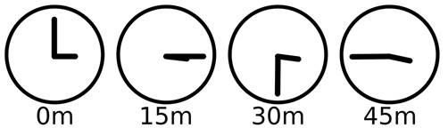

Prev - #23 99 Bottles of Beer | Table of Contents | Next - #25 Multiplication Table

Clocks have an unusual counting system compared to the normal
decimal number system we’re familiar with. Instead of beginning at 0 and going
to 1, 2, and so on forever, clocks start at 12 and go on to 1, 2, and so on up
to 11. Then it loops back to 12 again. (Clocks are quite odd if you think about
it: 12 am comes before 11 am and 12 pm comes before 11 pm.) This is a bit more
complicated than simply writing a program that counts upward. This exercise
requires using nested for loops to loop over the
minutes, the hours, and the am and pm halve of the day.
Exercise Description
Write a program that displays the time for every 15 minute interval from 12:00 am to 11:45 pm. Your solution should produce the following output:
12:00 am
12:15 am
12:30 am
12:45 am
1:00 am
1:15 am
--cut--
11:30 pm
11:45 pm
There are 96 lines in the full output.
Try to write a solution based on the information in this description. If you still have trouble solving this exercise, read the Solution Design and Special Cases and Gotchas sections for additional hints.
Prerequisite concepts: for loops,
lists, nested loops, string concatenation
Solution Design
This solution requires the use of three nested for loops. The outermost for loop
iterates over 'am' and 'pm'.
The second for loop iterates over twelve hours,
starting with '12', then '1',
then '2', and so on until '11'.
The third for loop iterates over the minutes in
15-minute increments: '00', '15',
'30', and '45'. Note that
the hours and minutes values are strings, not integers, because we need to
concatenate them into our final string, like: '12' + ':' +
'00' + ' ' + 'am' evaluates to '12:00 am'
You’re used to for loops iterating
over a range of integers from the range() function.
But Python’s for loops can iterate over lists of any
values. For example, enter the following into the interactive shell:
>>> for i in ['Alice', 'Bob', 'Carol']:
... print('Hello ' + i)
...
Hello Alice
Hello Bob
Hello Carol
What a for loop does is iterate over a
sequence of values. The following interactive shell example is the equivalent for i in range(4):
>>> for i in [0, 1, 2, 3]:
... print(i)
...
0
1
2
3
In this case, we explicitly typed out the integers to iterate in
a list rather than use the more convenient range(4).
But they produce identical results. And explicitly typing out the integers in a
list becomes prohibitively long for large ranges such as range(1000).
Special Cases and Gotchas
The order of the nested for loops is
important. You want the innermost for loop to
iterate over minutes, the next innermost to iterate over hours, and the
outermost for loop to iterate over 'am' and 'pm'.
Now try to write a solution based on the information in the previous sections. If you still have trouble solving this exercise, read the Solution Template section for additional hints.
Solution Template
Try to first write a solution from scratch. But if you have difficulty, you can use the following partial program as a starting place. Copy the following code from https://invpy.com/every15minutes-template.py and paste it into your code editor. Replace the underscores with code to make a working program:
# Loop over am and pm:
for meridiem in [____, 'pm']:
# Loop over every hour:
for hour in [____, '1', '2', '3', '4', '5', '6', '7', '8', '9', '10', '11']:
# Loop over every 15 minutes:
for minutes in ['00', ____, ____, '45']:
# Print the time:
print(____ + ':' + ____ + ' ' + ____)
The complete solution for this exercise is given in Appendix A and https://invpy.com/every15minutes.py. You can view each step of this program as it runs under a debugger at https://invpy.com/every15minutes-debug/.
Prev - #23 99 Bottles of Beer | Table of Contents | Next - #25 Multiplication Table